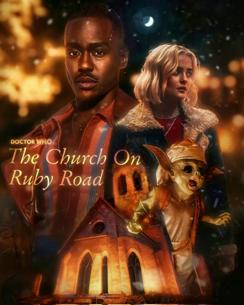
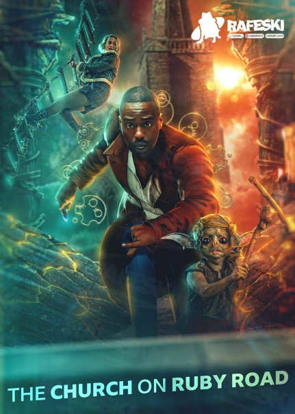

Эра Пятнадцатого Доктора
<<< НАЗАД ||| Церковь на улице Руби Роуд ||| ДАЛЬШЕ >>>
MVO [TVShows], DUB [IRON VOICE], [Inari Studio], MVO [GoLTFilm], [ColdFilm], [RUDUB], DVO [KerobTV] или Original [ENG]
Субтитры: Русские {форсированные} или полные {TrueTransLate} - при выборе английских.

The Church on Ruby Road
праздничный спецвыпуск
25 декабря 2023
Формат: 60-минутный эпизод
| Варианты озвучек: | * Разные: смотрите по инструкции чаще всего это 0-я серия первого сезона |
|---|---|
| Скачивание и просмотр: |
Доктор встретится лицом к лицу с мифическими и загадочными гоблинами, а его жизнь столкнется с Руби Сандей. О Руби мало что известно, ведь она младенцем была брошена в канун Рождества. Теперь она живет со своей мамой Карлой(приёмной) и бабушкой Черри, а ее мир вот-вот перевернется, когда она встретит Доктора, и они отправятся в свое первое совместное приключение...




